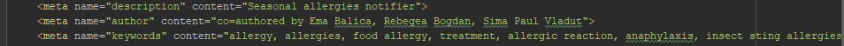

Github authors
Architecture
Project development stages
The project has 2 main development stages:
- The devolopment of a Web Interface
- The development of the functionality of the interface
1.The Web interface
The Web Interface refers to the visual aspects of the website.At this step the design of the website is conceived. The implementation of the design is done using front end languages like Html,Css and Javascipt.
2.The functionality of the interface
The main functionalities of the website are:
- Registration and login/logout: The user has the ability to create an account and log into it by using his/hers facebook account. This functionality is implemented using a login API from Facebook. When clocking on the Login button, a pop up window will appear on the screen, which will show the user that information the website will take from his/her account and will have the possibility to accept or decline the use of his/hers account data. After accepting the data will be saved into a database. This is necessary because without saving the user information into a database, there is no way of knowing which user has registered or accepted to receive notifications. Also, the user's friends
- Information: This will provide statistics about the data collected. The statistics will be desplayed in a 2D/3D format using SVG and WebGL.
- Notifications: The users will receive in browser notifications about the spread of seasonal allergies. The notifications will also provide the user with information about allergies(e.g. how to prevent them) via external data which will be loaded on the website if the user will request it. This will be done by loading the content of web pages(which were preselected) using AJAX.
Data modeling
We'll create a table using the MySql database management system which contains all the information we need about our users. People can connect to our web page with their Facebook account, which allows our application to collect data using the Facebook API and insert them into our table.
For out data to be more organised we used the tag because it allows browsers to understand the information on the web page so it can reach more users.
Local storage
Our users connect to out website using their Facebook account. Because of that we don't need to use local storage or cookies because all the data about our users can be extracted using the Facebook API.